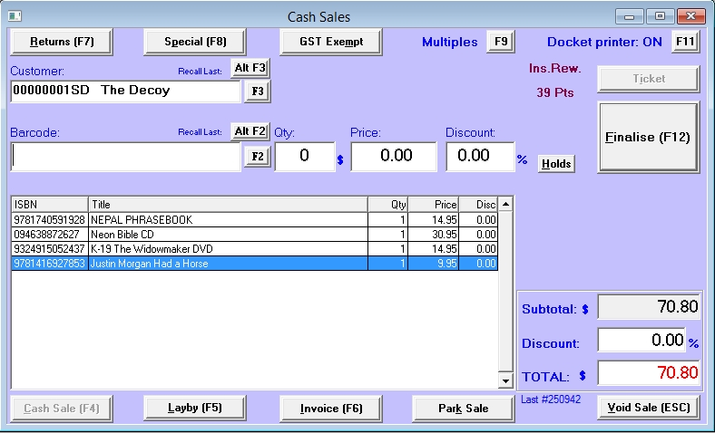
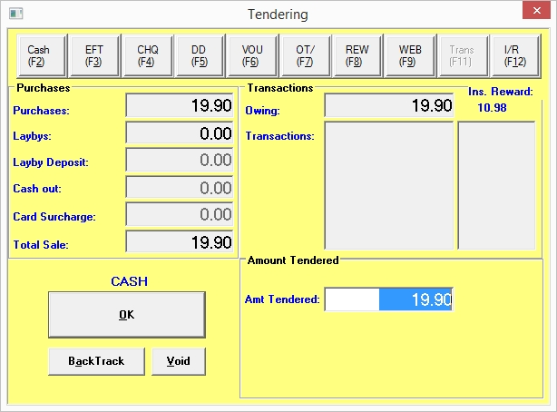
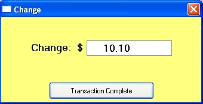

A standard sale using the POS – a quick introduction:
Below is a step by step guide to performing a standard cash sale. For a more detailed summary with all options explained click on this link.
Step 1:
Open the Cash Sale window from the main menu: Sales / Cash
Step 2:
Scan the barcode on the item being sold (or type in the barcode field and press Enter). The title will now appear below the barcode field.

Step 3:
The quantity will automatically appear as 1. To change the quantity, just overtype it.
You can discount the line by typing in the discount as a percentage (e.g. for a 10% discount, type 10 in the Discount field).
Alternatively you can overtype the Price field with a new price. The program will turn this into a discount e.g. default price is $19.95. Overtype this with the new price of $15.00. The program will then display the price as $19.95 less a 24.81% discount.
Click the Save button (or press the F12 key) to save the line.
(To clear the line, use the Clear Line button or press the Escape key).
Step 4:
Repeat steps two and three to record all items for the sale.
After saving each line the caption on the Save button changes to Finalise.
To conclude the sale, click on this Finalise button (or press the F12 key).
(To cancel the sale, use the Void Sale button or press the Escape key).
Step 5:
The Tendering window will now open.

The Total Sale field will display the total value of the sale. Where the tender type is Cash, the amount will be rounded to the nearest 5c (Australia) or 10c (New Zealand).
The Tender type is set to the default - usually Cash or EFTPOS. In this screen shot the default is Cash.
(See below for details on the various transaction types)
To change the tender type click on the appropriate tender type button or press the corresponding function key.
The Amount Tendered field displays the sale total amount – for a Cash sale, overtype the amount tendered. e.g. a sale of $49.90 and the customer tenders $60 as payment. Type '60' into the Amount Tendered field.
Click the OK button (or press the Enter key) to close the tender window and complete the sale.
Alternatively to make a change before processing the sale by:
Clicking Backtrack button (or press the Escape key) to close the tendering window and return to the POS window.
Click Void Button to void the sale.
Step 6:
A sales docket will now print and the screen clear for the next sale.
If the transaction type used requires the cash drawer to open, this will happen now.

If there is any change to give the customer, a window will be displayed showing the change amount. After giving the change, click the Transaction Complete button or press the Enter or Escape keys to close the Change window.
Cash Sales - Options